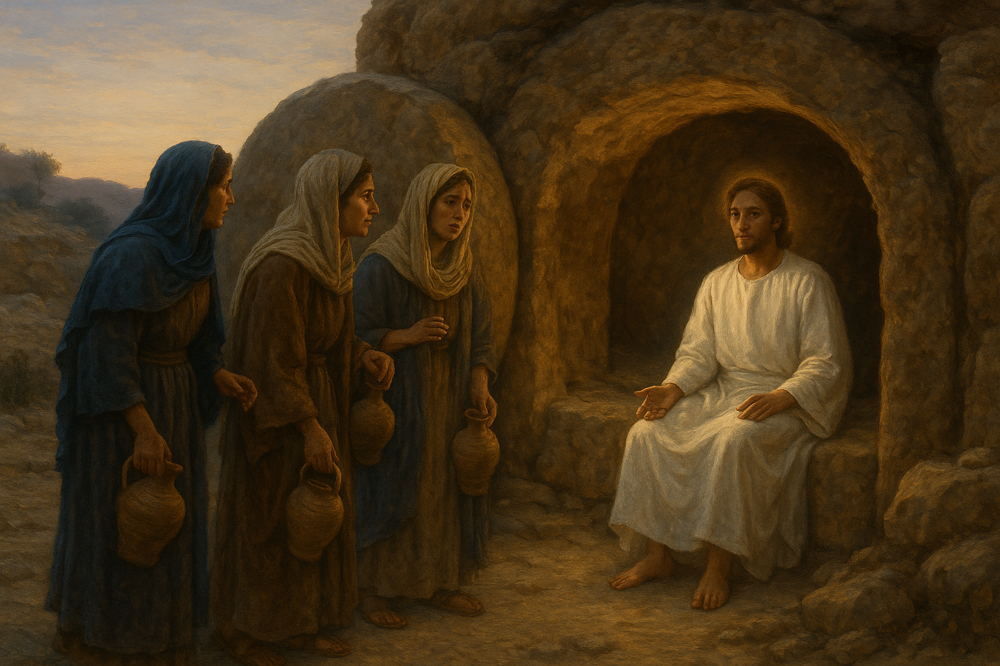
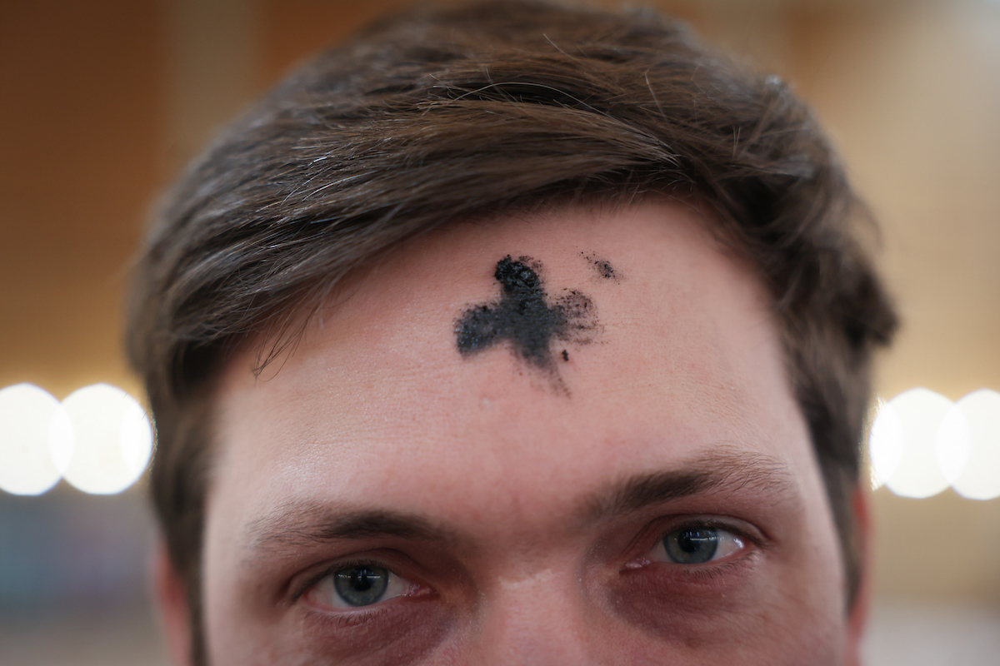
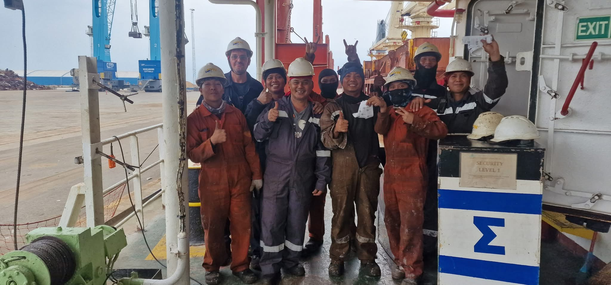
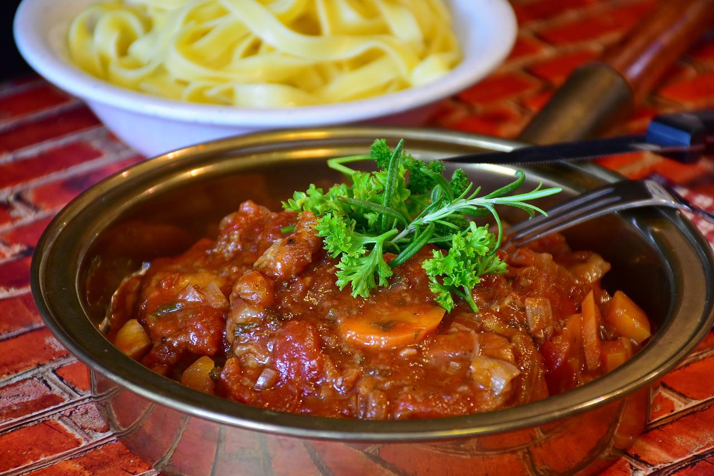

Sermon · Eastertide
Read Essay →
Be the Light: A Resurrection Reflection
Examining the grief, wonder, and quiet courage of the first women entering the empty dawn garden.
Experience Fr. JP’s writing through wide, swipeable visual galleries for each world. Designed for touch screens, visual rhythm, and documentary photography.

Examining the grief, wonder, and quiet courage of the first women entering the empty dawn garden.

Wrestling with the illusion of control, institutional hunger for power, and wilderness grace.
Understanding departure not as abandonment, but as the universal empowerment of community.
A 60th birthday expedition distributing scripture across remote rural dioceses.

Visiting international merchant crews aboard bulk carriers docked in Malmö's industrial harbour.
Advocating for bodily integrity, sexual diversity, and ecumenical courage in international forums.
Four decades into HIV: transforming theological stigma into compassionate community support.
Living with HIV as an ordained Anglican priest since 2000; breaking ecclesiastical taboos.

A warm sensory reflection on rich broth, patience, and hospitality as everyday sacramental practice.
How recipes traveled across oceans from Cape Town to Sweden, keeping fellowship alive.
Reflections on Swedish winter afternoons and how warmth is shared over hot cups and cardamom.
Compare With The Other Approaches